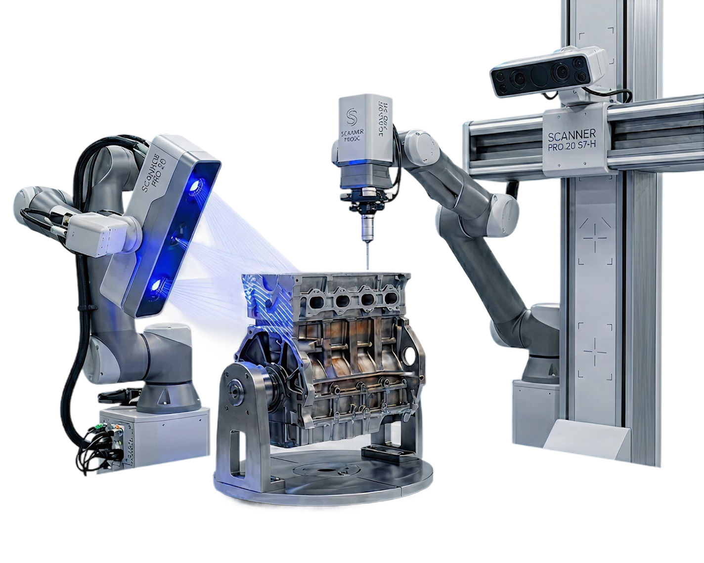
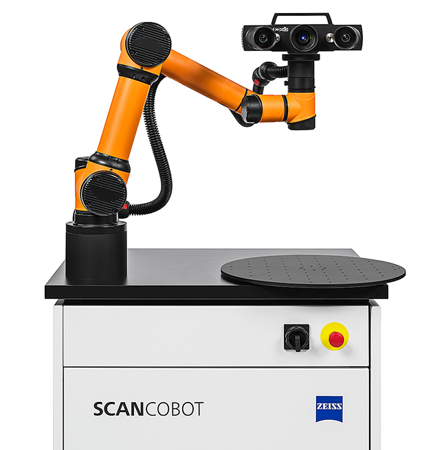
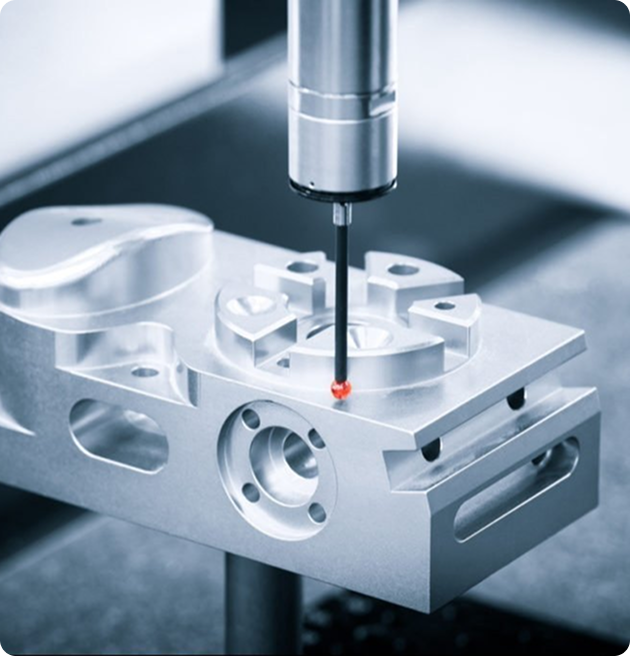
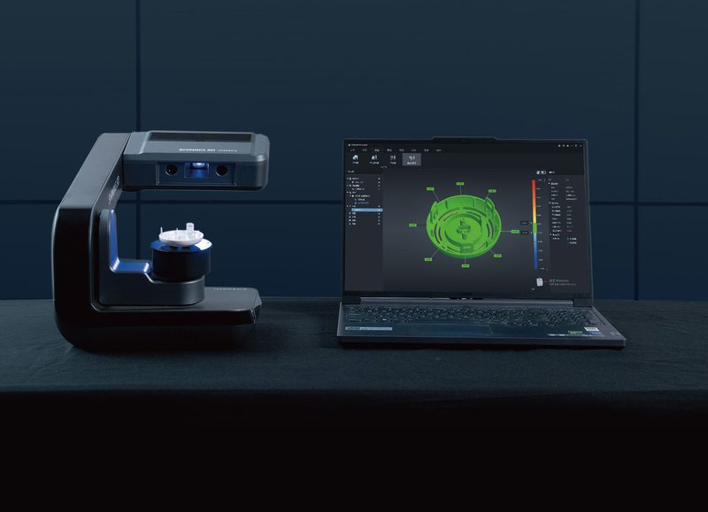
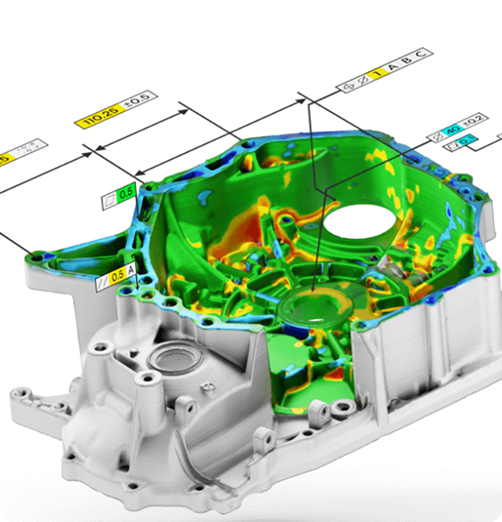
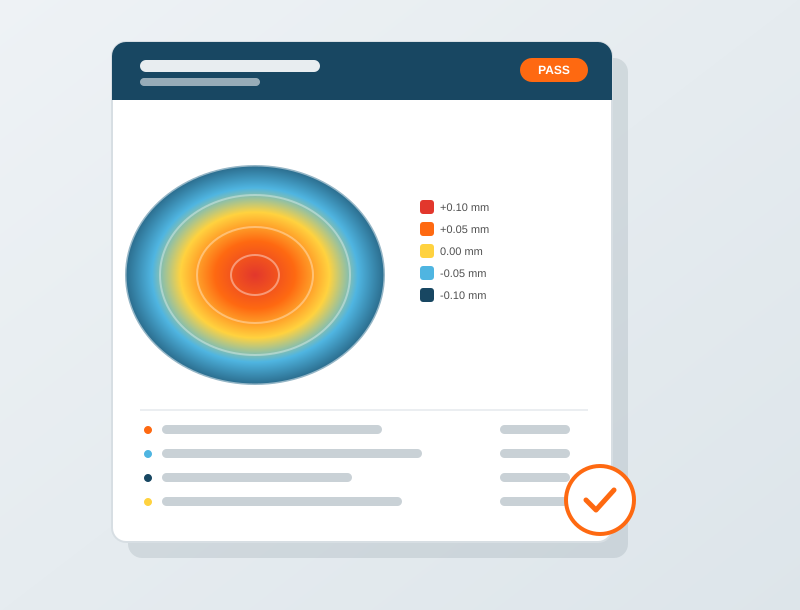
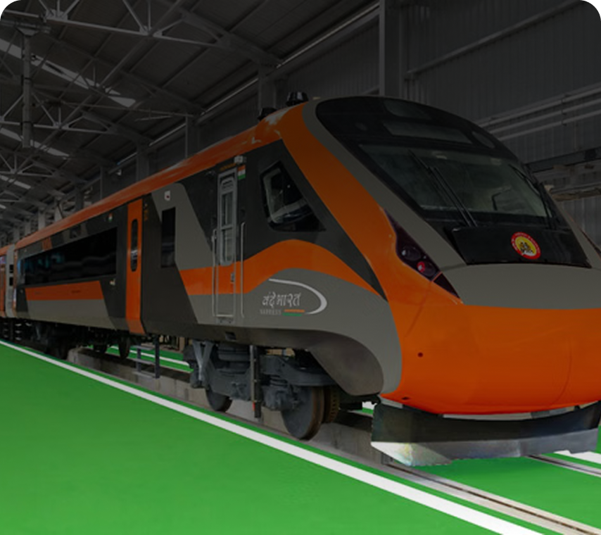

Delivering highly accurate 3D scanning, laser tracker inspection, CMM quality verification, and reverse engineering services that ensure zero-defect quality, eliminate production bottlenecks, and accelerate project timelines.

Founded in 2020 by industry veteran Amol Palande, we bridge the gap between complex engineering designs and real-world precision with rapid Pan-India onsite capabilities.
Our mobile metrology teams travel directly to your facility in Pune, Bengaluru, and across India, eliminating the cost and hazard of transporting critical machinery or heavy tooling.

We prioritize zero downtime for your production line. We review project inquiries swiftly and deploy metrology hardware to your plant on short notice.

Our team comprises certified application specialists with extensive domain expertise in automotive GD&T, aerospace structural inspection, and reverse engineering.

From 0.01 mm desktop optical scanning to sub-millimeter 80-meter laser tracker verification, our results adhere to ISO and NABL traceable calibration standards.

We protect your intellectual property. All CAD models, point clouds, and inspection data are stored in secure environments under binding mutual NDAs.
Led by Amol Palande, our mission is to deliver world-class metrology services to Indian manufacturers, upholding the company motto: Accuracy That Drives Quality.
From micro-machined parts to massive aerospace assemblies, we provide turnkey scanning, inspection, and 3D modeling solutions.

Portable & FastRapid, high-accuracy non-contact data capture directly at your site. Using our SIMSCAN GEN2 and portable optical scanners, we capture freeform geometries and complex curves in minutes.
Unparalleled precision for large-scale components up to 80 meters. Perfect for jig & fixture alignment, machine tool calibration, turbine casings, and aerospace sub-assemblies.

Quality AssuranceGuaranteed quality assurance through contact probing and automated measurement. Ideal for critical first-article inspection (FAI) and batch quality control.

0.01 mm AccuracyPowered by the AutoScan Inspec2, this service captures small, intricate components with 0.01 mm metrology-grade accuracy on a 3-axis automated turntable.

Parametric CADRecreate broken, legacy, or undocumented components into fully parametric 3D CAD models ready for tooling, CNC machining, or 3D printing.

Detailed, traceable, customer-friendly inspection documentation. Visual 3D color-deviation mapping comparing real scans directly to 3D CAD nominal data.
We invest in premier metrology hardware from industry leaders like Scantech, Leica Geosystems, and FARO Technologies to deliver sub-millimeter precision.
 0.020 mm
0.020 mm
Ultra-lightweight portable 3D scanner engineered for rapid inspection in confined environments and complex surfaces.
 Wireless
Wireless
Completely wireless optical 3D scanning system. Operates without target markers for high agility in automotive interiors.
The industry gold standard for large-volume measurement, alignment, jig setting, and dynamic aerospace tracking.
 0.024 mm
0.024 mm
Portable coordinate measuring machine combining multi-axis contact probing with high-definition laser line scanning.
Automatic desktop 3D scanner designed for small, high-precision parts with automated 3-axis turntable rotation.
Tell us your part size, tolerance requirements, and whether you need onsite deployment. Our system recommends the exact instrument.
Use Recommendation Tool ↓Select your component characteristics below for an immediate technical recommendation.
We understand the rigorous dimensional requirements, safety codes, and quality benchmarks governing Indian manufacturing. Click any sector below to explore specialized metrology services, hardware deployed, and engineering deliverables.

View Services ↗Driven by a deep passion for precision and engineering innovation, Mr. Amol Palande brings over 15 years of hands-on metrology experience to lead Sunrise Metrology Solutions. His mission is to empower Indian industries with world-class, accessible 3D scanning, laser tracking, and reverse engineering.
Founder & Managing Director
We maintain an agile, documented workflow ensuring every client project is executed with traceable accuracy and on-time delivery.
We review your drawings, part dimensions, tolerance thresholds, and inspection requirements to configure the optimal hardware.
Our engineers deploy with certified metrology instruments directly to your plant or laboratory to capture high-density point clouds.
We process the scan data into parametric CAD models or align against nominal CAD in PolyWorks/Control X to verify all GD&T features.
You receive comprehensive 3D color deviation maps, pass/fail inspection sheets, and native CAD files ready for immediate production.
Talk directly to our metrology specialists to discuss your inspection workflow, equipment suitability, or onsite service schedule across India.

Direct Phone Line
+91 9975 232 333

Direct Email Support
amol.palande@sunrisemetrology.com
Locations & Hubs
Pune | Bangalore | Pan India